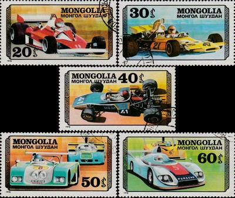
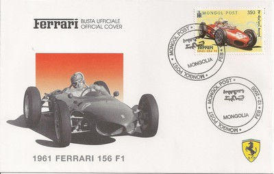
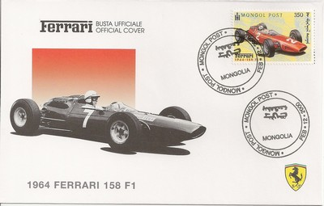
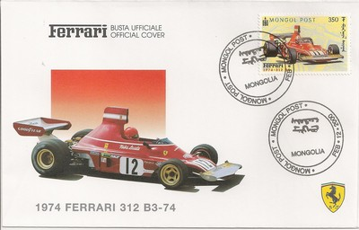
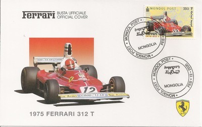
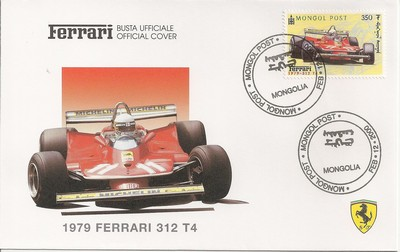
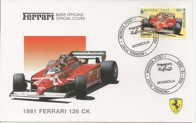

Depicted on Postage Stamps
|
 Issue date: 1978 A set of 7 stamps showing various racing cars. The 30m depicts the McLaren M23. The McLaren M23 was a F1 car mostly inspired by the Lotus 72 and the same Ford DFV engine was used. It was introduced for the 1973 season, and scored pole position with Denny Hulme on its very first outing. Scheckter was responsible for one of the biggest accidents F1 has ever seen at the 1973 British Grand Prix, spinning his M23 in front of the pack. This was before Emerson Fittipaldi joined McLaren from Lotus in 1974. His knowledge of the Lotus 72 helped McLaren develop the M23 and that season, Fittipaldi gave McLaren its first drivers' and constructors' world championships, beating Ferrari, Tyrrell and Lotus. Further development in 1975 helped Fittipaldi and McLaren to second in both championships. Fittipaldi was replaced by James Hunt, who went on to win a dramatic and controversial 1976 season with the final evolution M23. When the replacement McLaren M26 proved troublesome, Hunt and Jochen Mass relied on the M23 in the early part of the 1977 season, and even though the car was now 4 years old, it was still competitive. The M23 was never the most technically advanced F1 car, but sound preparation and continual development helped it win 16 grands prix, 2 drivers' and a constructors' world championship in its lifetime.  Issue date: 12th February 2000 A set of six stamps on first day coovers featuring the following Ferrari F1 cars: 1961 156 F1 - made to comply with the regulations that lowered engine displacement from 2.5 to 1.5litres 1964 158 F1 - made to replace the outdated 156, the 158 was driven by John Surtees (Surtees won the drivers' title in this car in 1964) 1974 312 B3 - the last of a series of cars, the B3 was based on a prototype called "snow plough" 1975 312 T - an uncomplicated design that responded well to mechanical upgrades, this car was very successful for Ferrari 1979 312 T4 - this was Ferrari's ground effect car to challenge the Lotus 1981 126 CK - the team's first attempt at a turbo F1 car  Issue date: 12th February 2000 A set of six stamps on first day coovers featuring the following Ferrari F1 cars: 1961 156 F1 - made to comply with the regulations that lowered engine displacement from 2.5 to 1.5litres 1964 158 F1 - made to replace the outdated 156, the 158 was driven by John Surtees (Surtees won the drivers' title in this car in 1964) 1974 312 B3 - the last of a series of cars, the B3 was based on a prototype called "snow plough" 1975 312 T - an uncomplicated design that responded well to mechanical upgrades, this car was very successful for Ferrari 1979 312 T4 - this was Ferrari's ground effect car to challenge the Lotus 1981 126 CK - the team's first attempt at a turbo F1 car  Issue date: 12th February 2000 A set of six stamps on first day coovers featuring the following Ferrari F1 cars: 1961 156 F1 - made to comply with the regulations that lowered engine displacement from 2.5 to 1.5litres 1964 158 F1 - made to replace the outdated 156, the 158 was driven by John Surtees (Surtees won the drivers' title in this car in 1964) 1974 312 B3 - the last of a series of cars, the B3 was based on a prototype called "snow plough" 1975 312 T - an uncomplicated design that responded well to mechanical upgrades, this car was very successful for Ferrari 1979 312 T4 - this was Ferrari's ground effect car to challenge the Lotus 1981 126 CK - the team's first attempt at a turbo F1 car  Issue date: 12th February 2000 A set of six stamps on first day coovers featuring the following Ferrari F1 cars: 1961 156 F1 - made to comply with the regulations that lowered engine displacement from 2.5 to 1.5litres 1964 158 F1 - made to replace the outdated 156, the 158 was driven by John Surtees (Surtees won the drivers' title in this car in 1964) 1974 312 B3 - the last of a series of cars, the B3 was based on a prototype called "snow plough" 1975 312 T - an uncomplicated design that responded well to mechanical upgrades, this car was very successful for Ferrari 1979 312 T4 - this was Ferrari's ground effect car to challenge the Lotus 1981 126 CK - the team's first attempt at a turbo F1 car  Issue date: 12th February 2000 A set of six stamps on first day coovers featuring the following Ferrari F1 cars: 1961 156 F1 - made to comply with the regulations that lowered engine displacement from 2.5 to 1.5litres 1964 158 F1 - made to replace the outdated 156, the 158 was driven by John Surtees (Surtees won the drivers' title in this car in 1964) 1974 312 B3 - the last of a series of cars, the B3 was based on a prototype called "snow plough" 1975 312 T - an uncomplicated design that responded well to mechanical upgrades, this car was very successful for Ferrari 1979 312 T4 - this was Ferrari's ground effect car to challenge the Lotus 1981 126 CK - the team's first attempt at a turbo F1 car  Issue date: 12th February 2000 A set of six stamps on first day coovers featuring the following Ferrari F1 cars: 1961 156 F1 - made to comply with the regulations that lowered engine displacement from 2.5 to 1.5litres 1964 158 F1 - made to replace the outdated 156, the 158 was driven by John Surtees (Surtees won the drivers' title in this car in 1964) 1974 312 B3 - the last of a series of cars, the B3 was based on a prototype called "snow plough" 1975 312 T - an uncomplicated design that responded well to mechanical upgrades, this car was very successful for Ferrari 1979 312 T4 - this was Ferrari's ground effect car to challenge the Lotus 1981 126 CK - the team's first attempt at a turbo F1 car |